Hướng Dẫn Cách Nuôi Vẹt Trong Nhà Cho Người Mới Bắt Đầu
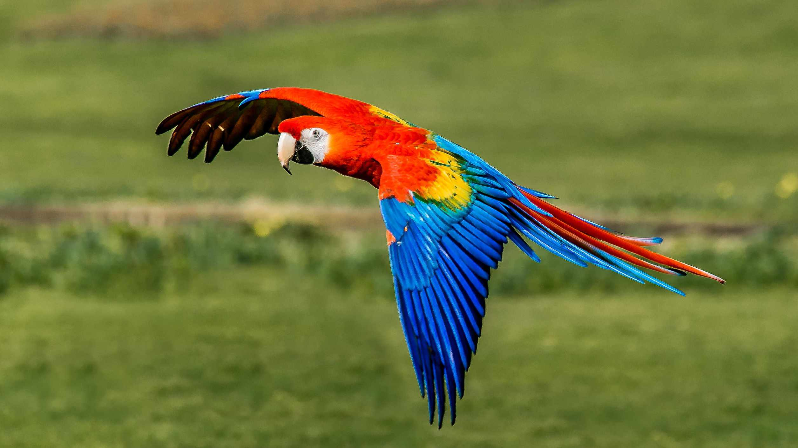Vẹt là loài chim rất thông minh, có thể nuôi như một loại thú cưng tuyệt vời, nhưng có một số điều bạn cần biết về vẹt và những yêu cầu trong việc chăm sóc chúng trước khi quyết định nuôi một con. Đầu tiên, vẹt có bản tính hoang dã mà không phải động vật được thuần hóa (như chó mèo), do đó chúng vẫn giữ nhiều hành vi và bản năng giống như họ hàng hoang dã của chúng. Tiếp đó, không phải giống vẹt nào cũng như nhau, do đó bạn cần tìm hiểu đặc tính của giống vẹt mà bạn định nuôi. Cuối cùng, vẹt sống lâu hơn hầu hết các loài thú cưng khác: giống vẹt nhỏ (cockatiel hoặc parrotlet) có thể sống đến 20 -30 năm, trong khi những giống vẹt to (macaw, amazon, hay cockatoo) có thể sống đến 60-80 năm.
Chuẩn bị nhà cho vẹt
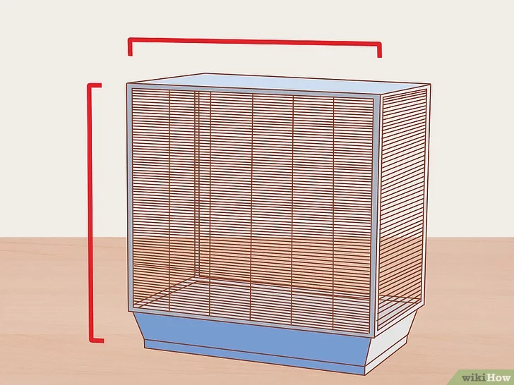
Chọn một chiếc lồng thích hợp. Lồng hình vuông hoặc chữ nhật thích hợp cho vẹt hơn vì lồng hình tròn khiến chúng cảm thấy không an toàn do không có các góc. Đảm bảo lồng phải đủ rộng để chú vẹt của bạn có thể leo trèo và chuyển động thoải mái. Lồng cũng phải có đủ không gian để gắn cành cây cho chim đậu, chỗ để đồ chơi, bát đựng thức ăn, nước uống, và chỗ cho chim nghỉ. Chọn kích thước lồng tùy theo kích thước của vẹt:
- Kích thước lồng nhỏ nhất cho giống vẹt nhỏ vào khoảng: 60cm rộng x 60cm dài x 60cm cao
- Kích thước lồng nhỏ nhất cho giống vẹt to vào khoảng: 1,5m rộng x 1,8m dài x 1m cao
- Khoảng cách giữa các song là 1,2cm cho giống vẹt nhỏ
- Khoảng cách giữa các song là 10 cm cho giống vẹt to
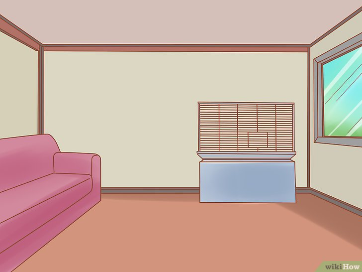
Đặt lồng trong căn phòng nào đó để chú vẹt của bạn có thể tương tác. Vẹt là loài động vật có tính xã hội. Trong tự nhiên, chúng sống thành đàn và thường xuyên tương tác với bạn cùng đàn. Nếu bị giữ ở những nơi cách biệt, chúng có thể mắc chứng lo âu chia cách. Vẹt thích ở những nơi có người qua lại.
- Nếu có nuôi các loại thú cưng khác, bạn cần để lồng vẹt trong căn phòng mà chúng không vào được khi bạn ra khỏi nhà. Đảm bảo canh chừng các con vật khác khi chúng ở gần lồng chim và không cho chúng vào phòng nếu chúng gây stress cho vẹt.
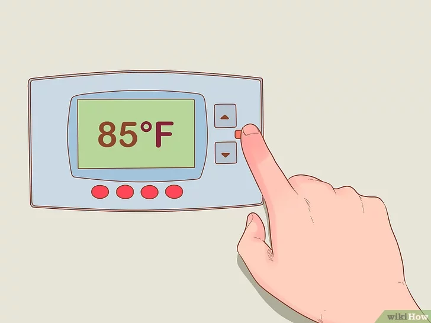
Giữ nhiệt độ ổn định. Loài chim có thể chịu được khoảng biến thiên nhiệt độ khá rộng, nhưng nhiệt độ lý tưởng cho vẹt là vào khoảng 18,5 – 29,5 độ C. Tránh để vẹt trong phòng quá lạnh hoặc tắt máy sưởi suốt đêm vào mùa đông. Nhiệt độ dưới 4,5 độ C có thể gây nguy hiểm cho vẹt, nhất là với những con mảnh dẻ. Những chú vẹt tròn trĩnh hơn có thể bị stress nếu nhiệt độ tăng cao trên 29,5 độ C. Nếu buộc phải để vẹt ở nhiệt độ cao hơn, bạn cần đảm bảo không khí lưu thông tốt.
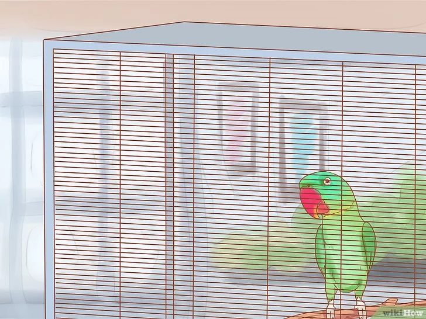
Cho chú vẹt mới của bạn vào lồng. Đầu tiên, đóng hết cửa ra vào và cửa sổ để đảm bảo an toàn. Sau đó, bạn cần xác định xem chú vẹt của bạn thân thiện hay hung hăng. Từ từ mở cũi nhốt vẹt ra, từ từ đưa tay về phía con vẹt. Nếu vẹt không phản ứng nhiều, bạn có thể tiếp tục đưa tay về phía nó. Nhưng nếu vẹt há mỏ ra và hung hăng mổ về phía tay bạn, bạn sẽ phải cần đến phương pháp thứ hai.
- Nếu con vẹt đó không hung hăng, bạn tiếp tục đưa tay về phía nó, hướng các ngón tay (hoặc cánh tay nếu là vẹt to) vuông góc ở khoảng trên bàn chân nó một chút. Nếu con vẹt của bạn đã được huấn luyện để bước lên, bạn có thể nói “bước lên” và nó sẽ nhảy vào ngón tay (hoặc cánh tay) của bạn. Từ từ lấy con vẹt ra khỏi cũi và đưa đến lồng. Hướng con vẹt về phía lồng sao cho cành cây trong lồng song song và ở phía trên tay bạn một chút. Nó sẽ bước lên cành cây, sau đó bạn có thể đóng cửa lồng và để nó làm quen với nhà mới một lúc.
- Đối với con vẹt hung hăng hoặc không biết bước lên, bạn sẽ phải tóm lấy nó và bỏ vào lồng. Việc này không ảnh hưởng gì đến quan hệ giữa bạn và vẹt; nó sẽ vượt qua được. Bạn cần phải quả quyết và hành động nhanh mà không để vẹt sổng ra. Nếu vẹt bay quanh phòng thì nỗi sợ hãi của nó càng tăng lên và bạn càng khó bắt. Dùng tay trần là lý tưởng nhất, nhưng nếu sợ thì bạn có thể đeo găng tay da mỏng hoặc dùng khăn. Cố gắng tóm lấy cổ của vẹt, nơi ngay phía dưới đầu (như thế không những bạn yên tâm không bị vẹt cắn, mà đường thở của vẹt đỡ bị chặn hơn là khi bạn túm vào bụng nó). Cho dù có tóm vẹt bằng cách nào, bạn cũng nên nhanh chóng đưa nó đến lồng và đừng để nó thoát ra.
- Bất kể dùng cách nào để bỏ vẹt vào lồng, bạn cũng nên để vẹt một mình trong một thời gian. Có thể vài ngày đầu vẹt sẽ ăn uống kém hơn bình thường, nhưng bạn cần đảm bảo rằng thức ăn và nước uống phải là thứ quen thuộc với nó. Cho nó một thời gian để bình tĩnh lại và thích nghi với nhà mới trước khi tương tác.
Cho vẹt ăn
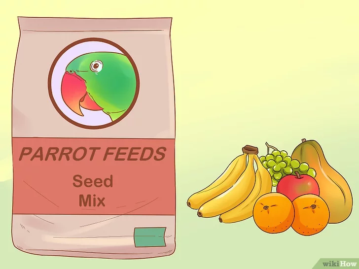
Thay đổi thực đơn cho vẹt. Vẹt cần một chế độ ăn phong phú với nhiều chất dinh dưỡng. Tốt nhất là không nên giới hạn thức ăn của vẹt với các loại hạt và thức ăn viên, mặc dù hỗn hợp hạt và thức ăn viên ở cửa hàng thú cưng cũng tốt dựa trên chế độ ăn cơ bản của chúng. Sau đây là vài món để cho vẹt ăn thêm ngoài hỗn hợp hạt và thức ăn viên:
- Cho vẹt ăn rau và hoa quả tươi. Rửa kỹ trước khi cho vẹt ăn cũng như dành cho người. Nhiều chú vẹt thích ăn nho, chuối, táo, cà rốt, quả mọng, rau xanh và mọi loại bí, đậu nấu chín và các thứ khác nữa. Đảm bảo không cho ăn quá nhiều hoa quả vì trong hoa quả có chứa đường.
- Một số giống vẹt như macaw thích tách vỏ hạt để lấy phần bên trong ra ăn. Bạn thử cho vẹt mấy quả hồ trăn, hồ đào và hạt mắc ca.
- Không cho vẹt ăn những thức ăn có chứa caffein, cồn, sô cô la, bánh ăn vặt chứa đường hoặc muối, thức ăn có dầu mỡ, đậu sống hoặc khô, lá đại hoàng, thì là, bắp cải, măng tây, cà tím và mật ong.
- Không bao giờ cho vẹt ăn quả bơ và hành! Cả hai món này gây độc cho vẹt. Quả bơ có thể gây ngừng tim đột ngột và khiến vẹt chết.
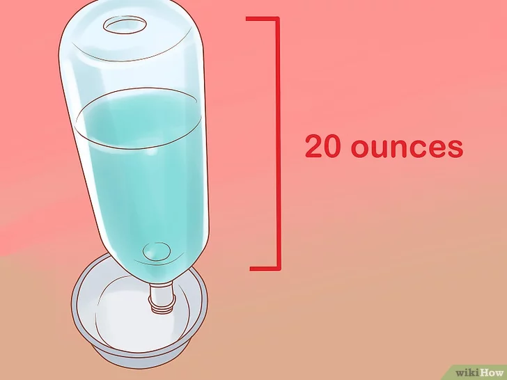
Cho vẹt ăn với lượng vừa đủ. Bát đựng thức ăn và nước uống ít nhất phải có cỡ 600 ml cho vẹt nhỏ và vừa, cỡ 900ml cho vẹt to. Trẻ mới dứt sữa cũng như chim con cần thêm lượng thức ăn do mức độ trao đổi chất cao và hoạt động mạnh.
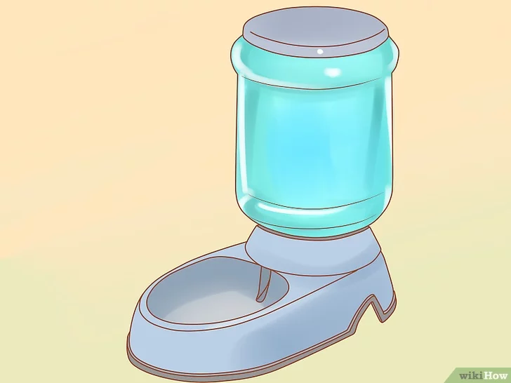
Bát đựng nước uống cho vẹt cần đủ rộng để vẹt có thể vào tắm. Chim sẽ uống cùng thứ nước tắm của nó, và điều này là bình thường. Bạn nhớ không cho vitamin vào nước ngay cả khi có hướng dẫn như vậy. Lý do là chim không uống nhiều nước và bạn không biết được nó nạp vào bao nhiêu, hơn nữa việc đó còn khiến vi khuẩn nhanh chóng sinh sôi trong nước.
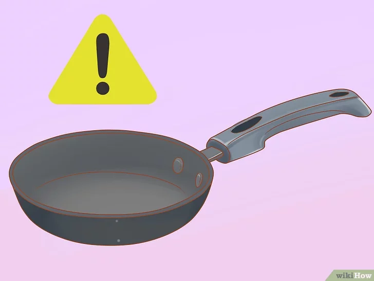
Tránh nấu ăn bằng chảo và các dụng cụ không dính. Điều này đặc biệt đúng khi bạn để vẹt trong bếp hoặc gần đó. Các hóa chất sử dụng trong chảo không dính có thể nguy hiểm đến tính mạng đối với vẹt khi được đun nóng đến một nhiệt độ nào đó.
- Khói thuốc lá gián tiếp có hại cho vẹt cũng như cho người. Nếu bạn có hút thuốc và nuôi vẹt thì đừng hút trong nhà.
Chuẩn bị nhà cho vẹt
Chọn một chiếc lồng thích hợp. Lồng hình vuông hoặc chữ nhật thích hợp cho vẹt hơn vì lồng hình tròn khiến chúng cảm thấy không an toàn do không có các góc. Đảm bảo lồng phải đủ rộng để chú vẹt của bạn có thể leo trèo và chuyển động thoải mái. Lồng cũng phải có đủ không gian để gắn cành cây cho chim đậu, chỗ để đồ chơi, bát đựng thức ăn, nước uống, và chỗ cho chim nghỉ. Chọn kích thước lồng tùy theo kích thước của vẹt:
- Kích thước lồng nhỏ nhất cho giống vẹt nhỏ vào khoảng: 60cm rộng x 60cm dài x 60cm cao
- Kích thước lồng nhỏ nhất cho giống vẹt to vào khoảng: 1,5m rộng x 1,8m dài x 1m cao
- Khoảng cách giữa các song là 1,2cm cho giống vẹt nhỏ
- Khoảng cách giữa các song là 10 cm cho giống vẹt to
Đặt lồng trong căn phòng nào đó để chú vẹt của bạn có thể tương tác. Vẹt là loài động vật có tính xã hội. Trong tự nhiên, chúng sống thành đàn và thường xuyên tương tác với bạn cùng đàn. Nếu bị giữ ở những nơi cách biệt, chúng có thể mắc chứng lo âu chia cách. Vẹt thích ở những nơi có người qua lại.
- Nếu có nuôi các loại thú cưng khác, bạn cần để lồng vẹt trong căn phòng mà chúng không vào được khi bạn ra khỏi nhà. Đảm bảo canh chừng các con vật khác khi chúng ở gần lồng chim và không cho chúng vào phòng nếu chúng gây stress cho vẹt.
Giữ nhiệt độ ổn định. Loài chim có thể chịu được khoảng biến thiên nhiệt độ khá rộng, nhưng nhiệt độ lý tưởng cho vẹt là vào khoảng 18,5 – 29,5 độ C. Tránh để vẹt trong phòng quá lạnh hoặc tắt máy sưởi suốt đêm vào mùa đông. Nhiệt độ dưới 4,5 độ C có thể gây nguy hiểm cho vẹt, nhất là với những con mảnh dẻ. Những chú vẹt tròn trĩnh hơn có thể bị stress nếu nhiệt độ tăng cao trên 29,5 độ C. Nếu buộc phải để vẹt ở nhiệt độ cao hơn, bạn cần đảm bảo không khí lưu thông tốt.
Cho chú vẹt mới của bạn vào lồng. Đầu tiên, đóng hết cửa ra vào và cửa sổ để đảm bảo an toàn. Sau đó, bạn cần xác định xem chú vẹt của bạn thân thiện hay hung hăng. Từ từ mở cũi nhốt vẹt ra, từ từ đưa tay về phía con vẹt. Nếu vẹt không phản ứng nhiều, bạn có thể tiếp tục đưa tay về phía nó. Nhưng nếu vẹt há mỏ ra và hung hăng mổ về phía tay bạn, bạn sẽ phải cần đến phương pháp thứ hai.
- Nếu con vẹt đó không hung hăng, bạn tiếp tục đưa tay về phía nó, hướng các ngón tay (hoặc cánh tay nếu là vẹt to) vuông góc ở khoảng trên bàn chân nó một chút. Nếu con vẹt của bạn đã được huấn luyện để bước lên, bạn có thể nói “bước lên” và nó sẽ nhảy vào ngón tay (hoặc cánh tay) của bạn. Từ từ lấy con vẹt ra khỏi cũi và đưa đến lồng. Hướng con vẹt về phía lồng sao cho cành cây trong lồng song song và ở phía trên tay bạn một chút. Nó sẽ bước lên cành cây, sau đó bạn có thể đóng cửa lồng và để nó làm quen với nhà mới một lúc.
- Đối với con vẹt hung hăng hoặc không biết bước lên, bạn sẽ phải tóm lấy nó và bỏ vào lồng. Việc này không ảnh hưởng gì đến quan hệ giữa bạn và vẹt; nó sẽ vượt qua được. Bạn cần phải quả quyết và hành động nhanh mà không để vẹt sổng ra. Nếu vẹt bay quanh phòng thì nỗi sợ hãi của nó càng tăng lên và bạn càng khó bắt. Dùng tay trần là lý tưởng nhất, nhưng nếu sợ thì bạn có thể đeo găng tay da mỏng hoặc dùng khăn. Cố gắng tóm lấy cổ của vẹt, nơi ngay phía dưới đầu (như thế không những bạn yên tâm không bị vẹt cắn, mà đường thở của vẹt đỡ bị chặn hơn là khi bạn túm vào bụng nó). Cho dù có tóm vẹt bằng cách nào, bạn cũng nên nhanh chóng đưa nó đến lồng và đừng để nó thoát ra.
- Bất kể dùng cách nào để bỏ vẹt vào lồng, bạn cũng nên để vẹt một mình trong một thời gian. Có thể vài ngày đầu vẹt sẽ ăn uống kém hơn bình thường, nhưng bạn cần đảm bảo rằng thức ăn và nước uống phải là thứ quen thuộc với nó. Cho nó một thời gian để bình tĩnh lại và thích nghi với nhà mới trước khi tương tác.
Giữ sức khỏe cho vẹt
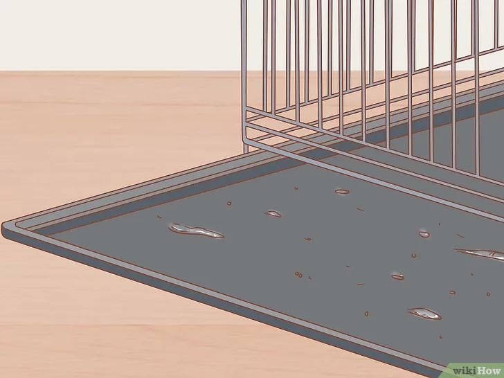
Dọn dẹp đáy lồng chim hai ngày một lần. Thay những tấm lót, vứt bỏ hạt, vỏ hạt, sỏi và đồ chơi vỡ hỏng, v.v… Tôt nhất là nên chú ý làm sạch (dọn dẹp những thứ bừa bãi không mất nhiều thời gian – loại bỏ các cành cây v.v…) mỗi ngày một lần.
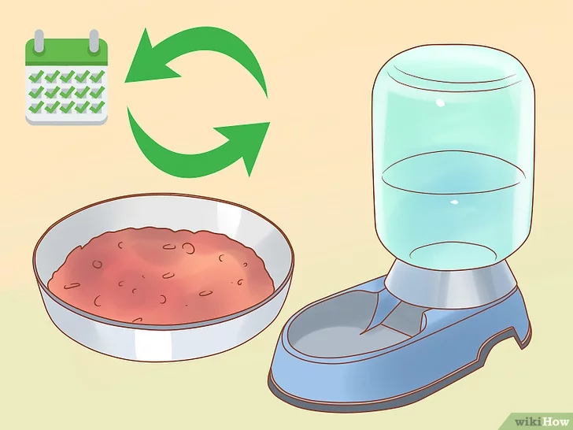
Rửa sạch và thay bát đựng thức ăn, nước uống hàng ngày. Loại bỏ thức ăn và nước uống trong bát, rửa sạch và thay thức ăn, nước uống mới mỗi ngày.
- Loại bỏ các thức ăn dễ hỏng như đậu nấu chín ngay sau khi chim ăn. Vẹt có thể dễ bị nhiễm khuẩn, do đó giữ cho lồng sạch sẽ là điều cần thiết.
- Đảm bảo dùng thuốc sát trùng an toàn cho chim để làm sạch lồng mỗi tuần. Thuốc này có thể mua ở cửa hàng bán thú cưng. Thuốc sát trùng thông thường dành cho người có thể quá mạnh và gây hại cho vẹt.
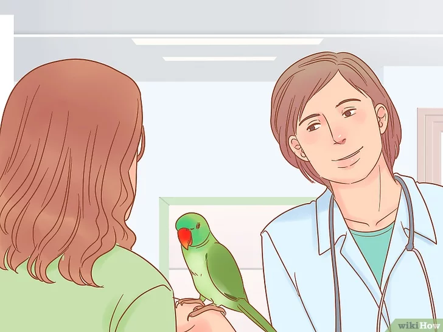
Đến bác sĩ thú y định kỳ. Một số vẹt suốt đời hoàn toàn khỏe mạnh, tuy nhiên mỗi khi vẹt của bạn có vấn đề về sức khỏe, bạn có thể xử lý bằng cách tham khảo bác sĩ thú ý về các biện pháp phòng bệnh. Đảm bảo bác sĩ thú y phải có chuyên môn chữa trị cho chim, nếu không bạn sẽ tốn tiền vô ích. Bạn nên lên lịch khám sức khỏe tổng quát hàng năm cho chim.
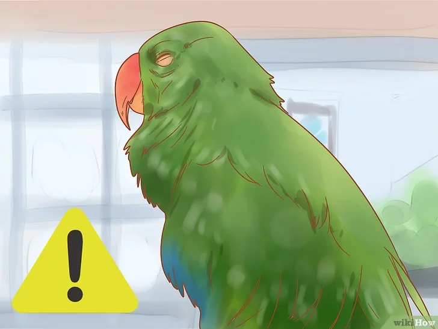
Quan sát các vấn đề về sức khỏe của vẹt. Một chú vẹt khỏe mạnh thường hoạt bát với môi trường xung quanh, hầu như luôn đứng thẳng và rất hoạt động. Nếu vẹt bắt đầu có dấu hiệu bị bệnh, bạn nên đưa nó đến bác sĩ thú y. Một số dấu hiệu cho thấy vẹt mắc bệnh bao gồm:
- Mỏ bị biến dạng, thụt vào hoặc bị loét
- Khó thở
- Xuất hiện những vết bẩn lem mhem quanh mắt hoặc mũi
- Thay đổi về hình dạng và kết cấu của phân
- Vẹt gầy đi hoặc không muốn ăn
- Mắt hoặc mí mắt sưng phồng
- Những vấn đề về lông, bao gồm việc vẹt xé, nhổ lông và lông mỏng đi.
- Đầu gục xuống, thờ ơ hoặc quá im lặng.
Huấn luyện và giao tiếp với vẹt
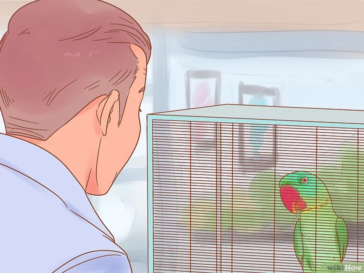
Học cách tiếp cận lồng vẹt một cách thích hợp. Đầu tiên, bạn nên tiếp cận lồng vẹt từ từ và không gây tiếng động. Lúc đầu bạn cũng cần tránh giao tiếp bằng mắt với chú vẹt đang sợ sệt để nó không cảm thấy như bị thú săn mồi chú ý. Nếu thấy vẹt cố gắng cắn bạn, hoặc vùng vẫy trong lồng, hoặc có những biểu hiện vô cùng khó chịu khi bạn xuất hiện, bạn cần phải để nó làm quen với mình:
- Đi ra khỏi phòng cho khuất tầm mắt. Bắt đầu quay trở lại, và ngay khi thấy vẹt có phản ứng khó chịu, bạn dừng lại và đứng yên tại chỗ. Không tiến tới thêm và đợi cho vẹt bình tĩnh lại. Sau đó bạn lại bắt đầu tiến đến gần hơn. Nếu vẹt lại phản ứng như thế, bạn dừng lại và chờ cho đến khi nó bình tĩnh. Có thể bạn cần làm như vậy nhiều lần cho đến khi đến gần lồng vẹt.
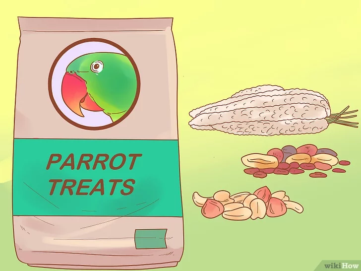
Xác định món khoái khẩu của vẹt. Việc huấn luyện vẹt là điều thiết yếu cho nhu cầu giao tiếp của nó. Để xác định món mà vẹt thích, bạn thử cho nó nhiều loại hạt, hoa quả tươi và khô . Một chú vẹt mới có thể chưa quen với một số thức ăn, vì vậy bạn cần cho nó vài ngày để xác định những món yêu thích. Khi đã tìm ra món đó, bạn đừng cho vẹt ăn hàng ngày mà để dành cho việc huấn luyện.
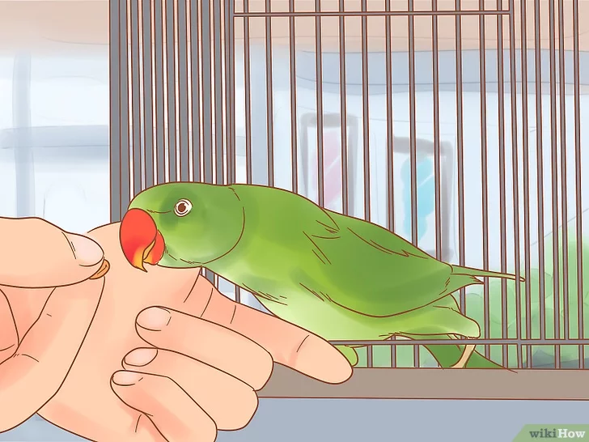
Huấn luyện cho vẹt ra khỏi lồng và quay trở lại lồng. Bước đầu tiên của việc huấn luyện là cho vẹt ăn trên tay bạn. Việc này có thể mất từ vài giây cho đến vài tuần. Bạn chỉ cần đến cạnh lồng và cầm theo món khoái khẩu của vẹt trong tay. Chờ cho vẹt tiến lại và ăn.
- Khi vẹt đã thoải mái với việc ăn trên tay người, bạn tập cho nó quen với hiệu lệnh từ dụng cụ clicker. Bạn click ngay trước khi cho vẹt ăn món ưa thích của nó trên tay. Làm như vậy mỗi lần thết đãi vẹt để cho nó quen với tiếng click trước khi được ăn món khoái khẩu.
- Dùng đũa để huấn luyện cho vẹt di chuyển đến khu vực nào đó trong lồng. Đầu tiên cho vẹt làm quen với đũa, cho phép nó tiến lại gần chiếc đũa, tiếp đó bạn click và cho vẹt ăn món yêu thích của nó. Dạy cho vẹt tiến lại gần chiếc đũa mỗi lần bạn click và thết đãi nó. Nếu vẹt không còn chú ý đến chiếc đũa nữa thì có lẽ nó đã no, và bạn phải chờ cho đến khi nó đói hơn để tiếp tục huấn luyện.
- Dùng đũa để dạy vẹt bước lên tay bạn hoặc bước lên cành cây cầm trên tay. Cuối cùng bạn sẽ có thể cho vẹt ra ngoài để tiếp tục huấn luyện và/ hoặc làm vệ sinh lồng.
- Thời gian huấn luyện nên ngắn (mỗi lần 10 -15 phút), và chỉ cố gắng dạy vẹt một hoặc hai lần một ngày.
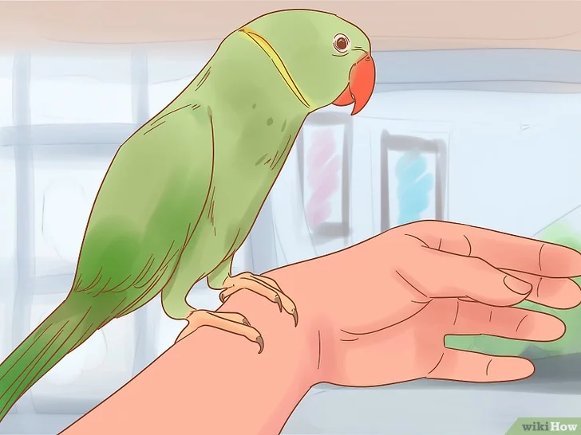
Thuần hóa vẹt để nó cho phép bạn vuốt ve. Nhiều chú vẹt thích được cưng nựng và vuốt ve. Bạn nên bắt đầu từ mỏ vẹt. Khi vẹt đã thoải mái với bàn tay bạn để gần mỏ của nó và không có ý cắn là bạn biết nó sẽ thoải mái với sự đụng chạm của bạn. Nếu vẹt có vẻ sắp cắn, bạn phải dừng ngay lại, giữ yên tay cho đến khi nó bình tĩnh lại. Khi bạn đưa tay lại gần mỏ vẹt mà nó không cố gắng cắn, bạn rút tay ra và cho nó ăn món yêu thích.
- Thực hiện các bước tương tự khi chạm vào mình vẹt. Từ từ đưa tay lại gần mình vẹt. Nếu thấy vẹt có vẻ khó chịu, bạn ngừng lại và chờ. Tiếp tục như thế đến khi nó cho phép bạn vuốt ve. Lúc đó bạn hãy cho vẹt món nó thích.
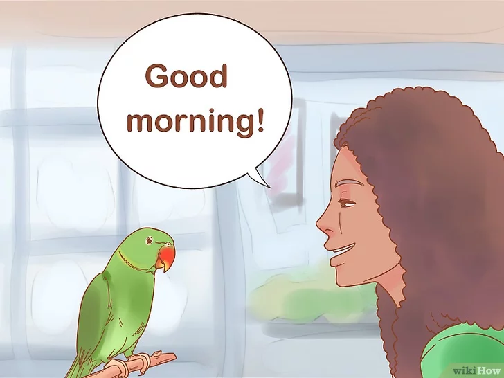
Nói chuyện với vẹt. Một số vẹt “nói” giỏi hơn những con khác, nhưng mọi con vẹt đều có khả năng bắt chước tiếng người. Cho dù chú vẹt có giỏi lặp lại lời bạn đến đâu, việc nói chuyện với nó là một phần quan trọng đối với sức khỏe tâm lý của vẹt, vì vậy bạn nhớ nói chuyện với nó thường xuyên.
- Gọi tên một số đồ vật: khi cho vẹt ăn vài món nào đó , bạn có thể nói, “táo” hay “chuối”.
- Liên hệ một số từ với các hành động của bạn. Khi bước vào phòng, bạn hãy nói “Xin chào, Hoa” (hay bất cứ tên nào của bạn) hoặc “Chào buổi sáng!” Khi rời khỏi phòng, bạn nói “Tạm biệt” hoặc “Chúc ngủ ngon”.
- Chú vẹt của bạn cũng sẽ rất thích nghe bạn nói chuyện (nói với nó hoặc có thể chỉ nói một chiều), nghe bạn hát, nghe âm thanh khi bạn xem tivi, hoặc nghe nhạc.
- Một số con vẹt có thể học lỏm nhiều câu, do đó bạn nên cẩn thận đừng nói tục hoặc la hét bên cạnh nó, trừ khi bạn muốn nó lặp lại những ngôn từ không hay đó.
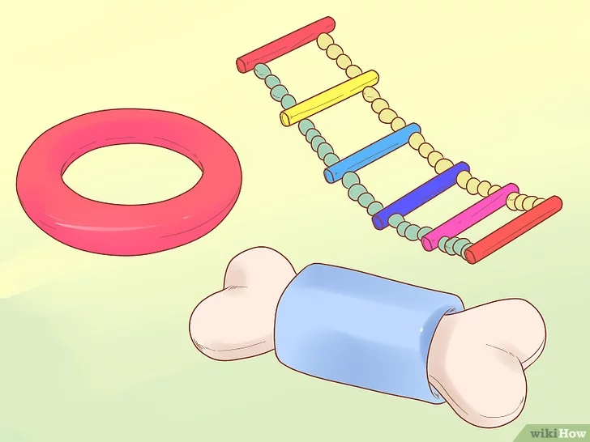
Chọn đồ chơi bổ ích cho vẹt. Đồ chơi kích thích tinh thần và giải tỏa sự nhàm chán cho vẹt. Bạn nên cho vẹt nhiều món đồ chơi với nhiều loại chất liệu, màu sắc và âm thanh. Nên quay vòng thay đổi đồ chơi hàng tuần để vẹt khỏi chán với một món đồ chơi ngày nào cũng giống ngày nào. Sau đây là vài lưu ý về đồ chơi cho vẹt mà bạn cần nhớ:
- Chọn đồ chơi nhỏ, nhẹ và gương cho vẹt nhỏ.
- Vẹt to thích dùng mỏ, lưỡi và chân để chơi những món đồ chơi dày hơn.
- Chim thích nhai. Một phần trong hành vi bản năng của chim là xé các vật. Bạn nhớ kiểm tra đồ chơi thường xuyên xem có hư hại không và vứt đi nếu chúng bị nứt hoặc vỡ thành mảnh nhỏ vốn có thể làm vẹt bị thương.
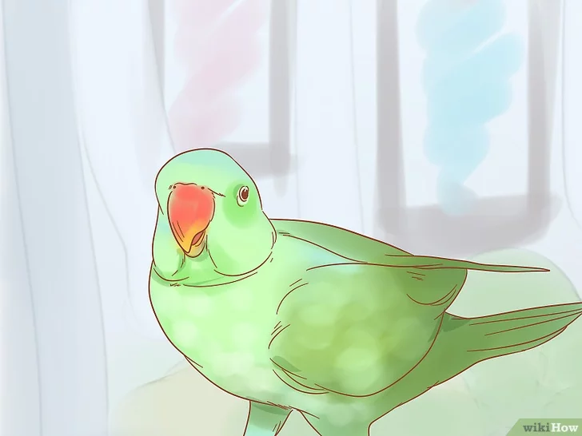
Học ngôn ngữ cơ thể của vẹt. Nói chung, vẹt đứng thẳng, lông xẹp xuống là đang cảnh giác hoặc sợ hãi. Vẹt thả lỏng, lông hơi xù lên là biểu hiện đang vui vẻ. Vẹt đứng trên một chân và lông phập phồng có thể là biểu hiện nó không khỏe. Toàn bộ lông dựng đứng lên hết mức thường có nghĩa là vẹt đang tán tỉnh hoặc sẵn sàng chiến đấu. Lần lượt duỗi từng bên cánh, hoặc lông đuôi vẫy nhẹ là nó đang khỏe mạnh và hạnh phúc. Một số vẹt khi vui vẻ còn ngọ nguậy lưỡi hoặc gật gù mỏ khi nhìn thấy thứ mà chúng thích thú.
Lời khuyên
- Nhiều con vẹt thỉnh thoảng thích được phun sương nhẹ. Dùng bình xịt và chút nước ấm để xịt cho chú vẹt của bạn được sạch sẽ.
- Đừng quên rằng chim thỉnh thoảng cũng thay lông và chú vẹt của bạn rụng vài chiếc lông là bình thường. Nếu lông vẹt bắt đầu trông có vẻ không đều hoặc có những mảng trụi, bạn nên đem vẹt đi bác sĩ thú ý.
- Cần biết bạn phải bỏ bao nhiêu công sức cho chú vẹt của mình. Vẹt là loại thú cưng đòi hỏi nhiều công chăm sóc, do vậy bạn cần đảm bảo có đủ thời gian và công sức cho nó.
- Các diễn đàn vẹt là một ý tưởng tuyệt vời để thu thập kiến thức và trò chuyện với những người yêu vẹt khác.
- Sử dụng các cây đậu có đường kính và độ nhám khác nhau để luyện tập cho chân vẹt. Cây đậu phủ cát có thể giúp chim mài móng và mỏ một cách tự nhiên.